Lennar (LEN): full analysis
This is the full analysis behind the short version. It's longer and more detailed by design.
Who is Lennar?
Lennar is one of the largest U.S. homebuilders. Its core operating model is to acquire or control land, develop or purchase homesites, build houses, and sell houses. In fiscal 2025, Lennar delivered 82,583 homes at an average selling price of $391,000 across 1,708 communities nationwide, generating $32.27 billion of Homebuilding revenue, which accounted for approximately 94.4% of consolidated revenue.[1]
Lennar is led by Stuart Miller, the current Executive Chairman and CEO, who has been a Lennar director since 1990. Miller served as CEO from 1997 to 2018, became Executive Chairman in 2018, returned as Co-CEO in September 2023, and became sole CEO again at the end of 2025.[1]
Since fiscal 2020, Lennar has been shifting away from directly owning land and toward controlling land through options and land-bank arrangements. In 2020, Lennar controlled 39% of its homesites and owned 61%. By November 2024, 82% were controlled and 18% were owned.[17, 1]
In February 2025, Lennar accelerated this transition by spinning off Millrose Properties. Lennar transferred approximately $5.6 billion of land assets representing roughly 87,000 homesites, along with $1.0 billion of cash, to Millrose. Lennar now increasingly relies on Millrose and other land banks to fund land acquisition and development, while Lennar retains options to purchase finished lots closer to the point of construction. This reduces the amount of capital Lennar must commit to land before generating home-sale revenue.[1]
From November 2024 to November 2025, Lennar reduced its directly owned homesites from 85,428 to 9,525. Over the same period, controlled homesites increased from 393,649 to 496,250, increasing the percentage of homesites controlled rather than owned from 82% to 98%.[1]
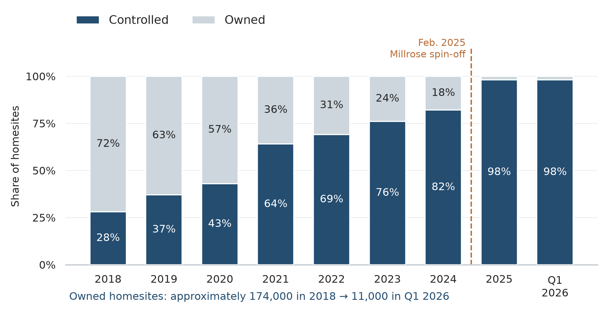
Source: [4], June 2026 investor presentation. The presentation reports 43% controlled in 2020; the contemporaneous 2020 filing cited in Figure 9 reports 39%. Each chart retains its stated source basis.
Lennar believes this asset-light model can reduce land exposure, shorten its cash cycle, increase asset turnover, and improve returns on equity. The strategy depends on whether lower capital employed and faster turnover can offset the lower margin associated with purchasing finished lots from third-party land providers.[4]
Lennar is also pursuing an even-flow production model intended to maintain more predictable construction volumes. Management believes this gives subcontractors greater visibility into future workload, improving scheduling and purchasing efficiency while reducing construction costs and build times.[4]
When demand weakens, Lennar can lower prices, increase incentives, or offer mortgage-rate buydowns rather than immediately reducing production. This allows gross margin to absorb weaker demand while maintaining sales velocity and asset turnover. The strategy therefore depends on whether higher throughput and lower capital intensity can offset lower profit per home.[2, 4]
The recent financial results show why this question matters. Lennar delivered 73,087 homes in 2023, 80,210 in 2024, and 82,583 in 2025, while average selling price declined from $445,000 to $423,000 to $391,000 over the same period. Despite the 3% increase in deliveries from 2024 to 2025, home-sale revenue declined 5%, from $33.8 billion to $32.1 billion. Home-sale gross margin declined from 22.3% in 2024 to 17.7% in 2025.[1]
The decline continued into 2026. In the third quarter of 2026, Lennar delivered 20,840 homes, 3% fewer than in the same quarter of 2025, while net income declined from $591 million to $284 million. New orders declined 9%, home-sale gross margin declined to 15.8%, and selling, general, and administrative expenses represented 9.2% of home-sale revenue, leaving a home-sale operating margin of approximately 6.6%.[2]
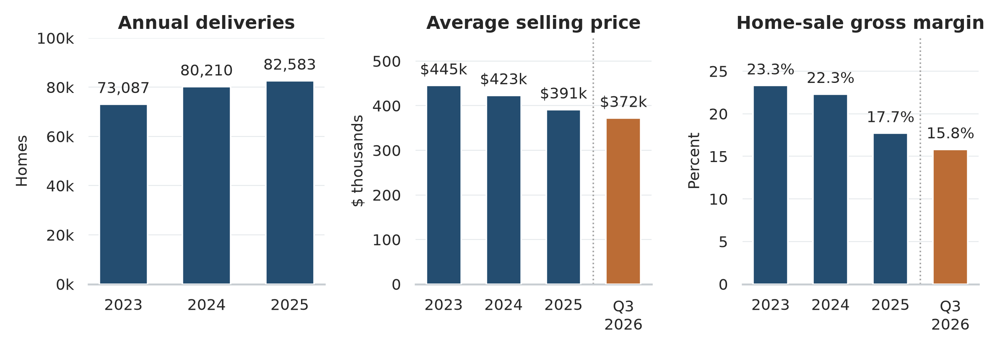
Sources: [1, 2]. Blue bars are full fiscal years; orange bars show Q3 2026 only. Annual and quarterly observations are not connected.
The central question is whether Lennar’s recent decline in profitability is temporary and its new operating model can generate higher returns on capital, or whether the lower margins required to maintain that model will permanently reduce earning power.
The Housing Environment
Lennar’s recent decline in profitability has occurred during a significant deterioration in U.S. housing affordability. The average 30-year fixed mortgage rate was 6.95% as of September 17, 2026, compared with approximately 3% in 2021. About 74% of primary-residence buyers financed their home purchase in 2025, making mortgage rates a direct constraint on the purchasing power of most buyers.[6, 8]
Higher mortgage rates have affected both housing demand and housing supply. On the demand side, buyers can afford less house at the same monthly payment, forcing builders to reduce prices or provide financing incentives. On the supply side, the majority of outstanding U.S. mortgages were still below 4% as of May 2026, substantially below prevailing mortgage rates above 6%. This rate-lock effect discourages existing homeowners from selling a house financed at a low rate and replacing it with a substantially more expensive mortgage.[7]
This creates an unusual environment for homebuilders. High rates reduce the number of buyers that can afford a home, but they also restrict the supply of existing homes competing with new construction. Large builders such as Lennar also have an advantage over individual homeowners because they can directly subsidize financing through mortgage-rate buydowns and other incentives. As a result, new-home builders can continue generating sales even when prevailing mortgage rates constrain affordability, but doing so shifts part of the financing cost back to the builder through lower revenue and margin.[7, 1]
The new-home market has nevertheless weakened materially. In July 2026, new single-family home sales were running at a seasonally adjusted annual rate of 607,000, down 10.5% from June and 6.3% from July 2025. There were 488,000 new homes available for sale, representing 9.6 months of supply at the current sales rate. The combination of weaker sales and elevated inventory increases competition between builders and reduces their pricing power.[9]
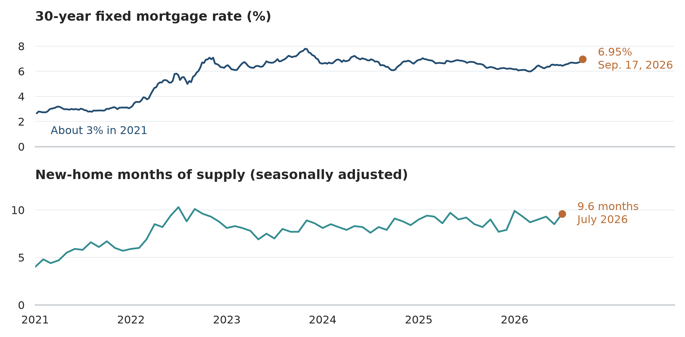
Sources: Freddie Mac PMMS and U.S. Census Bureau / HUD, via FRED series MORTGAGE30US (weekly) and MSACSR (monthly). Observed values only; no missing observations interpolated. https://fred.stlouisfed.org/series/MORTGAGE30US ; https://fred.stlouisfed.org/series/MSACSR
Lennar has responded primarily through incentives and pricing rather than large reductions in production. In the second quarter of 2026, Lennar provided an average of $55,200 of sales incentives per home delivered, equal to 12.9% of home-sale revenue. In the third quarter, incentives remained approximately 12.0%, while Lennar’s average selling price declined to $372,000 from $383,000 in the same quarter of 2025.[3, 2]
These incentives directly affect Lennar’s reported revenue. A mortgage-rate buydown may allow a buyer to qualify for a home without reducing its stated base price, but the cost of the incentive is still borne by Lennar and reduces the revenue recognized on the sale. This allows Lennar to maintain deliveries and sales velocity while reducing gross profit per home.[1]
The pressure is not uniform across Lennar’s markets. In the second quarter of 2026, incentives represented 13.6% of revenue in the East, 10.6% in the Central region, 19.1% in South Central, and 10.3% in the West. South Central includes Texas, where Lennar’s homes are also priced substantially below the company average. In the third quarter, South Central homes were delivered at an average price of approximately $230,000, compared with $372,000 for Lennar overall, making buyers in the region particularly sensitive to changes in monthly mortgage payments.[3, 2]
The West faces a different form of pressure. Third-quarter deliveries declined 8% from 4,926 to 4,529 while average selling price declined 5% from $599,000 to $571,000. South Central deliveries declined 7% and average selling price declined from $235,000 to $230,000. The East was more resilient, with deliveries increasing 2% and average selling price increasing from $366,000 to $372,000. Lennar is therefore exposed to several different regional housing cycles rather than a single national market.[2]
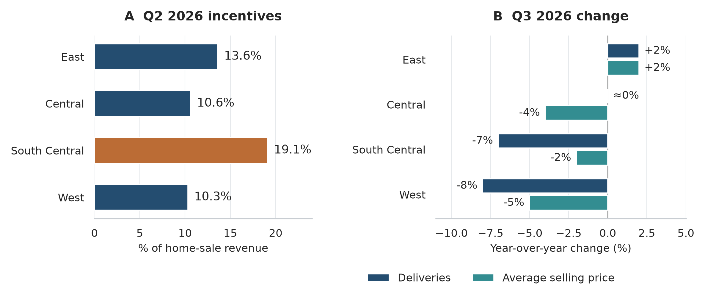
Sources: [2, 3]. Incentive levels refer to Q2 2026; delivery and price changes refer to Q3 2026 versus Q3 2025. Central deliveries were approximately flat.
The current margin pressure is also not being driven primarily by construction inefficiency. In the third quarter of 2026, Lennar reported that construction cost per square foot declined approximately 6% year over year and approximately 14% from the fourth quarter of 2023. Management attributed the decline in gross margin primarily to lower revenue per square foot and higher land costs, partially offset by lower construction costs. Lennar is therefore reducing the direct cost of building homes, but not fast enough to offset weaker pricing and higher land costs.[2]
This distinction is important for evaluating the asset-light strategy. If current margins were falling because Lennar had lost control of construction costs, the operating model itself would already appear to be failing. Instead, several operating metrics have improved while weaker affordability has forced Lennar to return much of those savings to buyers through lower prices and incentives.
The near-term environment does not suggest an immediate reversal. Lennar expects fourth-quarter 2026 home-sale gross margin of approximately 15.5% to 16.0%, compared with 15.8% in the third quarter, with an average selling price between $370,000 and $380,000. The company is therefore not currently forecasting a significant recovery in pricing or margin.[2]
The distinction between cyclical and structural pressure is central to the investment case. Mortgage rates near 7%, 9.6 months of new-home supply, and elevated incentives provide a clear cyclical explanation for part of Lennar’s current margin compression. At the same time, these conditions provide the first meaningful test of whether Lennar’s new operating model can maintain attractive returns when pricing power is weak. If margins recover as affordability improves while asset turnover remains high, the recent decline in profitability is primarily cyclical. If margins remain structurally low after housing conditions normalize, the economics of Lennar’s new land and production model become a more significant concern.[6, 9, 2]
The Transformation of Lennar
Lennar’s asset-light strategy is primarily a response to the amount of capital and risk historically embedded in land ownership. A homebuilder that owns land must commit capital well before a home is completed and sold. If housing demand remains strong, that land can generate attractive margins. If demand weakens after the land has been acquired, however, the builder may be forced to sell homes at lower prices while still carrying land purchased under stronger market assumptions.
This was one of Lennar’s largest sources of losses during the 2007–2009 housing collapse. In 2007 alone, Lennar recorded $2.45 billion of inventory valuation adjustments, including $1.17 billion related to land it intended to sell and $748 million related to finished homes, construction in progress, and land intended for homebuilding. Lennar also wrote off $530 million of option deposits and pre-acquisition costs. Similar losses continued in 2008 and 2009, and Lennar later stated that inventory impairments, option write-offs, and valuation adjustments on unconsolidated entities accounted for much of its losses during those years.[5]
Land options already provided Lennar with some protection during that period. In most cases, the company could decide not to purchase optioned land and instead forfeit its deposit and related pre-acquisition costs. The $530 million of option write-offs in 2007 was therefore a realized loss, but it also allowed Lennar to avoid taking ownership of approximately 36,900 homesites whose economics had deteriorated.[5]
The current strategy extends that principle across substantially more of Lennar’s land pipeline. In 2018, Lennar owned 72% of its homesites and controlled 28%. By November 2024, those proportions had shifted to 18% owned and 82% controlled, and by November 2025 Lennar owned only 2% while controlling 98%. Over the same period, owned homesites declined from approximately 174,000 in 2018 to 9,525 in November 2025, while controlled homesites increased from approximately 69,000 to 496,250.[4, 1]
Millrose completed much of the final step in this transition. In February 2025, Lennar transferred $5.6 billion of land assets representing approximately 87,000 homesites and $1.0 billion of cash to Millrose. Millrose and other land banks can now acquire and develop land with their own capital while Lennar retains contractual access to finished homesites. As those lots become available, Lennar can purchase them closer to the point when construction begins rather than financing the full land acquisition and development period itself.[1]
The balance-sheet effect is significant. Lennar estimates that land banks had approximately $18.5 billion of capital invested in controlled homesites on its behalf as of February 2026. Management estimates that if Lennar had retained its previous land-owning structure, inventory on its own balance sheet would have been approximately twice as large.[4]
This does not eliminate Lennar’s exposure to land. Lennar pays deposits and option fees to secure access to lots, and those amounts can be lost if the company decides not to exercise an option. Lennar also ultimately pays a higher finished-lot cost because the land bank must earn a return for providing the acquisition and development capital. The economic change is therefore not the removal of land cost, but a reduction in the amount and duration of Lennar’s own capital committed to land and a transfer of part of the downside risk to the land provider.[1, 3]
The scale of Lennar’s deposits shows that the new model is not capital-free. Real-estate deposits and pre-acquisition costs increased from approximately $3.5 billion at the end of 2024 to $6.3 billion at the end of 2025 and approximately $7.3 billion by August 2026. The value of the asset-light model therefore depends partly on whether these deposits eventually stabilize as the land pipeline reaches a steady state. If deposits continue growing at a similar rate, part of the capital removed from owned land would simply reappear elsewhere in working capital.[1, 2]
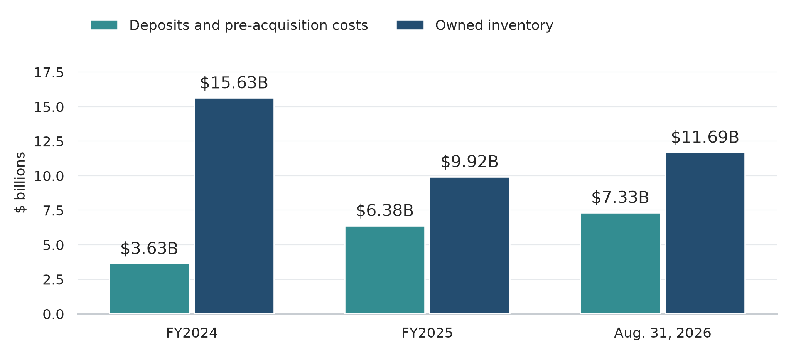
Sources: [1, 2]. August 2026 owned inventory is approximately $11.69B, excluding consolidated inventory not owned. Owned inventory includes homes and construction in progress as well as land. Deposits and inventory have different risk profiles.
Lennar combines this land strategy with an operating model designed to increase asset turnover. Management describes the business as moving toward home manufacturing, where land is delivered closer to the point of construction and homes move through a more predictable production process. Between 2018 and early 2026, Lennar increased inventory turns from approximately 1.0 times to 2.5 times while reducing owned homesites by more than 90%. Over the same period, annual deliveries increased by approximately 80%.[4]
Even-flow production is intended to reinforce that improvement. By maintaining more consistent construction volumes, Lennar can give subcontractors greater visibility into future workloads and reduce interruptions between stages of construction. This can improve crew utilization, purchasing economics, and scheduling. Lennar’s reported construction results have moved in the intended direction. Construction cost per square foot in the third quarter of 2026 was approximately 6% below the prior year and 14% below the fourth quarter of 2023, while construction cycle time had fallen to approximately 116 days.[4, 2]
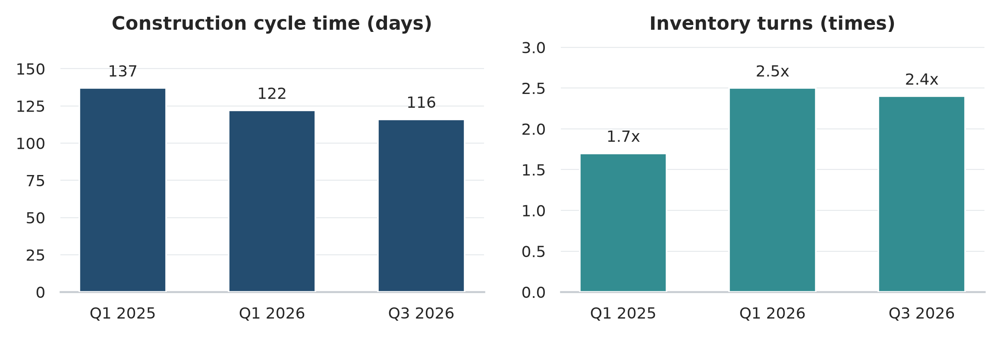
Sources: [2, 4]. Q3 2026 construction cost per square foot: down approximately 6% year over year and 14% from Q4 2023. Separate scales preserve the different units.
The economic objective is not to maximize margin on each home. Lennar is attempting to maximize the return generated by the capital committed to the business. A simplified relationship is:
Return on capital ≈ profit margin × asset turnover
A traditional land-heavy model can generate a higher margin because the builder retains more of the appreciation and development economics associated with the land, but it also requires more capital and turns that capital more slowly. Lennar’s model accepts part of that margin loss in exchange for lower capital employed and faster turnover.
Management illustrates this tradeoff using a hypothetical community. Under a traditional land-owning structure, the example generates a 15.0% pretax margin, 0.96 times asset turnover, and a 14.4% return on equity. Under the asset-light structure, pretax margin falls to 12.3%, but asset turnover rises to 1.72 times, producing a 21.0% return on equity while reducing peak capital employed from $31.8 million to $10.7 million. These figures are management estimates rather than realized company-wide results, but they show the economic logic behind the strategy.[4]
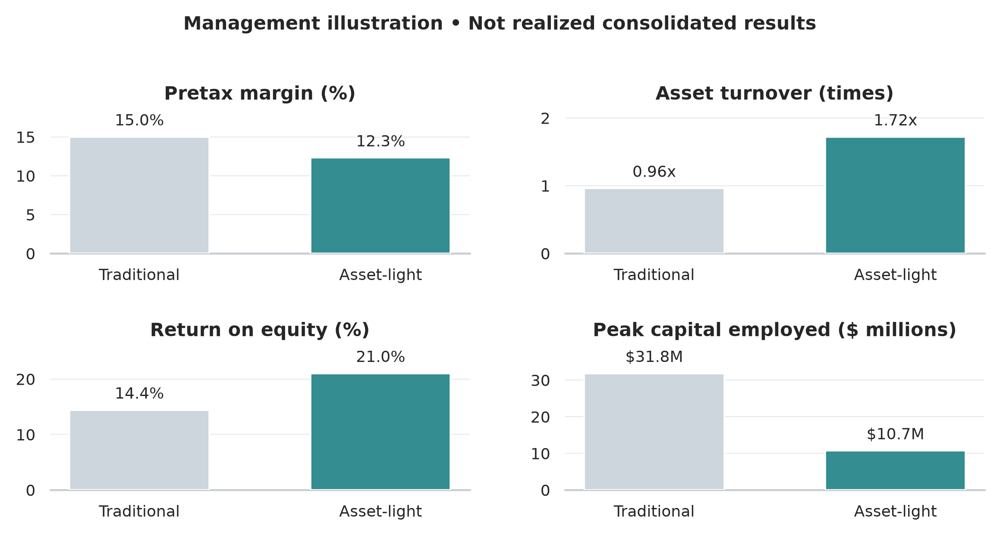
Source: [4]. Management assumptions for an illustrative community; not realized company-wide results or a forecast.
The strategy also changes Lennar’s downside profile. Under a land-heavy model, a severe downturn can force the company to impair the full carrying value of land purchased at uneconomic prices. Under an option-based model, Lennar can often abandon the land and lose its deposit rather than complete the purchase. Lennar therefore gives up part of the upside economics of land ownership in exchange for lower capital requirements and greater flexibility when market conditions deteriorate.[5, 1]
The remaining question is whether the operating benefits are large enough to offset the economics Lennar gives up. The company has already demonstrated substantial reductions in owned land, shorter construction cycles, lower construction costs, and higher asset turnover. It has not yet demonstrated that the new model can sustain attractive margins, convert earnings into cash consistently, and produce higher returns on equity through a full housing cycle. That distinction is what separates an operational transformation from a successful financial transformation.
Reading Lennar’s Economics Through the Financials
Lennar’s recent financial results are easier to understand by separating three effects: changes in home-sale economics, changes in capital intensity, and changes in the number of shares outstanding. Revenue and EPS alone do not distinguish between these factors.
Revenue per share has increased despite weaker pricing. Lennar generated $34.23 billion of consolidated revenue in 2023, $35.44 billion in 2024, and $34.19 billion in 2025. Over the same period, diluted weighted-average shares declined as Lennar repurchased stock. Consolidated revenue per diluted share therefore increased from approximately $121 in 2023 to $130 in 2024 and $133 in 2025. The increase does not indicate stronger underlying pricing. It reflects both higher home deliveries and a smaller share base.[1]
The more important deterioration has occurred in margin. Lennar’s home-sale gross margin declined from 23.3% in 2023 to 22.3% in 2024 and 17.7% in 2025. By the third quarter of 2026, it had fallen to 15.8%. Selling, general, and administrative expenses also represented a larger percentage of home-sale revenue as gross profit declined, reaching 9.2% in the third quarter of 2026. This reduced home-sale operating margin to approximately 6.6%.[1, 2]
The decline in margin explains why earnings have fallen much faster than deliveries. Net earnings attributable to Lennar were $3.94 billion in 2023 and $3.93 billion in 2024 before declining to $2.08 billion in 2025. Diluted EPS declined from $14.31 in 2024 to $7.98 in 2025, a 44% decline. Net income declined 47% over the same period, meaning share repurchases partially offset the earnings decline on a per-share basis.[1]
Lennar has reduced its share count materially. The company repurchased approximately 10.0 million shares in 2023, 13.6 million in 2024, and 14.1 million in 2025 through its repurchase program. In November 2025, Lennar also exchanged its remaining stake in Millrose for approximately 8.0 million Lennar shares, further reducing the share count without using cash. The lower share base increases each remaining shareholder’s ownership of Lennar and supports per-share earnings and book value, but only creates value when the shares are repurchased below their intrinsic value.[1]
Cash flow requires more interpretation. Operating cash flow was $5.18 billion in 2023, $2.40 billion in 2024, and only $217 million in 2025. The decline was much larger than the decline in reported earnings, but this does not mean that nearly all of Lennar’s earnings were non-cash. Homebuilding requires large movements in working capital, particularly inventory and land deposits.[1]
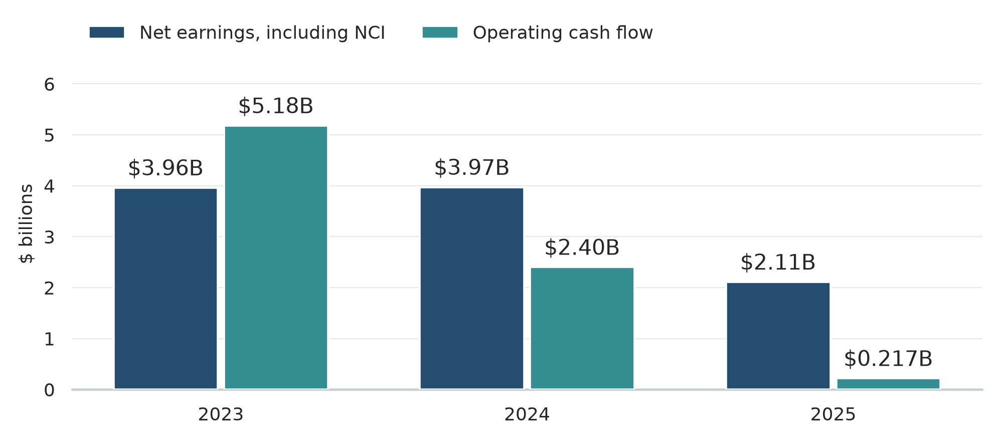
Source: [1]. Net earnings include noncontrolling interests (NCI). In 2023, inventory reduction released about $2.27B of cash. In 2025, deposits and pre-acquisition costs absorbed about $1.55B of operating cash flow.
In 2023, Lennar generated approximately $2.27 billion of cash by reducing inventory. This materially increased operating cash flow above net income. In 2025, the direction reversed. Lennar increased real-estate deposits and pre-acquisition costs by approximately $1.55 billion while continuing to commit capital to inventory and its expanding controlled-land pipeline. Operating cash flow therefore fell even though Lennar remained profitable.[1]
This distinction is important because traditional free-cash-flow analysis can be misleading for a homebuilder. Lennar’s cash conversion depends partly on where it is in the housing and land-investment cycle. When the company increases starts, acquires lots, or increases option deposits, cash is converted into working capital before the related homes are sold. When Lennar reduces starts or sells existing inventory without replacing it at the same rate, working capital is released and operating cash flow can exceed earnings.
The asset-light strategy is intended to reduce this working-capital requirement. If Lennar can control land without funding the full acquisition and development process itself, less capital should be required for each dollar of home-sale revenue. However, real-estate deposits and pre-acquisition costs increased from approximately $3.5 billion at the end of 2024 to $6.3 billion at the end of 2025 and approximately $7.3 billion by August 2026. The relevant test is therefore not whether Lennar can remove owned land from its balance sheet, which it has already done, but whether the controlled-land model eventually reduces the total amount of working capital required to support the business.[1, 2]
Debt has remained relatively conservative despite the decline in cash. At the end of 2024, Lennar had $2.26 billion of Homebuilding debt and $4.66 billion of Homebuilding cash, leaving it in a net cash position. By the end of 2025, Homebuilding debt had increased to $4.08 billion while cash declined to $3.44 billion. Homebuilding debt to total capital increased from 7.5% to 15.7%. By August 2026, Homebuilding debt had increased to approximately $4.30 billion while cash had fallen to approximately $1.15 billion, producing approximately $3.15 billion of net Homebuilding debt. Leverage remains moderate relative to Lennar’s equity base, but the movement shows that the transition has not yet produced the higher cash generation management ultimately expects.[1, 2]
Book value requires similar care because the Millrose transaction materially changed Lennar’s balance sheet. Stockholders’ equity increased from $26.58 billion at the end of 2023 to $27.87 billion at the end of 2024, then declined to $21.96 billion at the end of 2025. The 2025 decline should not be interpreted as a comparable decline in shareholder wealth because Lennar distributed approximately 80% of Millrose directly to shareholders and later exchanged its remaining Millrose stake for Lennar shares. Assets and equity therefore left Lennar while value was simultaneously transferred to Lennar shareholders outside the company.[1]
The longer-term change in book value per share is more informative. Lennar’s equity has grown while its share count has fallen substantially since the late 2010s, increasing the amount of book equity represented by each remaining share. However, book value only creates economic value if Lennar can earn an adequate return on that equity. A homebuilder earning 7% on book value should not be valued the same as one earning 15%, even if both report the same book value per share.
This makes return on equity one of the most important measures for evaluating Lennar’s transformation. Lennar earned unusually high returns during the pandemic housing cycle as strong pricing and high margins combined with rising deliveries. Those returns have declined sharply as margins compressed. The asset-light strategy is intended to increase asset turnover enough to restore attractive returns without requiring a return to peak-cycle margins.[1, 4]
The relationship can be expressed through a simplified DuPont framework:
ROE ≈ profit margin × asset turnover × financial leverage
Lennar is intentionally changing the first two components. It is accepting lower margins while attempting to increase asset turnover. Because leverage remains relatively low, the strategy cannot rely on additional debt to manufacture a higher ROE. Higher returns must come primarily from earning adequate margins while using substantially less capital to produce each home.
This is why the recent improvement in asset turnover is not sufficient by itself. Lennar can build and sell homes faster while still earning an inadequate return if gross margin falls too far. Conversely, lower margins are not necessarily evidence of a weaker business if capital employed falls enough to produce higher returns on equity. The relevant measure is the combination of the two.
Lennar’s financial statements therefore show a company in the middle of a transition rather than one that has already demonstrated the economics of its new model. Asset turnover has improved, owned land has fallen sharply, and the share count has declined. At the same time, margins, earnings, cash conversion, and return on equity have weakened. The investment case depends on whether the first group of changes can eventually reverse the second without requiring a return to unusually favorable housing conditions.
D.R. Horton: The Control Experiment
D.R. Horton provides the most useful comparison for Lennar because it is another large national builder serving many of the same affordability-sensitive markets. It has also spent the last decade reducing direct land ownership, but stopped well short of Lennar’s current model.
In fiscal 2015, D.R. Horton owned 68% of its homesites and controlled 32% through options and other arrangements. By 2016, the controlled share had increased to 45%. By 2020, D.R. Horton controlled approximately 70% of its homesites, and by 2021 the figure had reached 76%. As of June 2026, D.R. Horton owned approximately 22% of its homesites and controlled 78%.[13, 19, 12, 11]
The direction of travel therefore resembles Lennar’s, but the endpoint does not. Lennar moved from 61% owned and 39% controlled in 2020 to 2% owned and 98% controlled by 2025. D.R. Horton moved from a similarly land-heavy position toward a predominantly controlled model, but retained a much larger directly owned land position.[17, 1, 13, 12, 11]
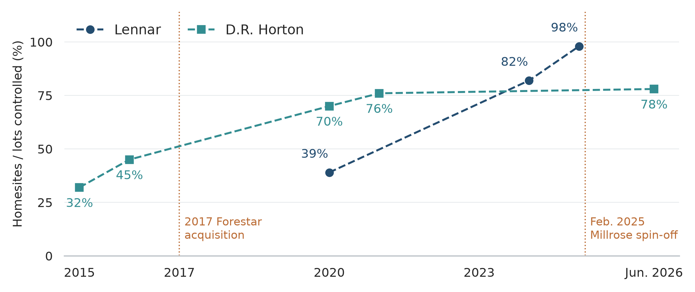
Sources: [1, 11–14, 17, 19]. Markers show disclosed observations; dashed lines are visual guides, not annual estimates. Lennar 2020 uses the 39% contemporaneous filing figure; Figure 1 uses the later presentation’s 43%.
D.R. Horton reinforced this strategy in 2017 by acquiring a 75% controlling interest in Forestar, a publicly traded land developer, for approximately $558 million. Forestar acquires and develops residential land and sells finished lots to D.R. Horton and other builders. This allows D.R. Horton to separate much of the land-development process from the homebuilding operation while still retaining economic exposure to the land business through its controlling ownership of Forestar.[14]
This is an important difference from Lennar. Lennar separated Millrose from the company and distributed most of the ownership to Lennar shareholders. D.R. Horton still consolidates Forestar and retains a controlling economic interest in the land developer. D.R. Horton has therefore reduced the amount of land held directly inside its homebuilding operation without fully giving up the economics of land development.[10, 14, 1]
The comparison is useful because D.R. Horton demonstrates that a more land-light structure can coexist with strong margins and returns on equity. D.R. Horton reported a home-sales gross margin of approximately 21.5% in fiscal 2025 and return on equity of approximately 14.6%. Operating cash flow was approximately $3.4 billion. These results were generated during the same period in which Lennar’s gross margin and return on equity were falling sharply.[10]
The gap has persisted into 2026. D.R. Horton reported a home-sales gross margin of approximately 20.4% for the first nine months of fiscal 2026 and generated more than $2.1 billion of net income over that period. Lennar’s home-sale gross margin had fallen to 15.8% by the third quarter of 2026.[11]
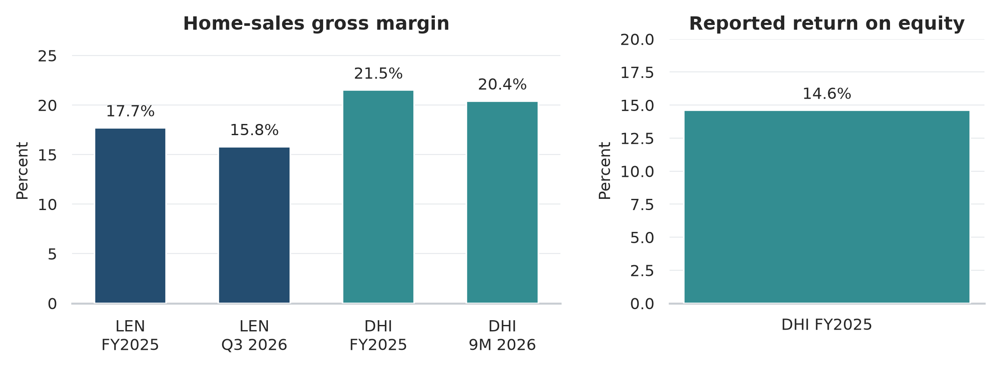
Sources: [1, 2, 10, 11]. Fiscal-year, quarterly and nine-month periods are labeled separately and are not identical comparison windows. DHI nine-month margin is approximate. No modeled Lennar ROE is mixed with reported DHI ROE.
The macroeconomic environment therefore cannot fully explain Lennar’s weaker profitability. Both companies face high mortgage rates, affordability pressure, and weaker housing demand. Both rely heavily on controlled land. Yet D.R. Horton has maintained substantially higher margins and returns.[10, 11, 2]
Part of the difference may come from how far Lennar has taken the land-light model. D.R. Horton appears to have settled around 75% to 80% controlled homesites rather than pushing toward nearly complete externalization of land ownership. Retaining more owned land and a controlling stake in Forestar may allow D.R. Horton to preserve more of the development economics that Lennar increasingly pays to third-party land providers.
There are also differences in operating strategy. D.R. Horton has historically emphasized maximizing returns on inventory through pricing, incentives, production levels, and inventory management. Lennar has been more explicit about maintaining even-flow production and using gross margin to protect sales velocity and asset turnover. The result is that Lennar may be more willing to sacrifice margin in order to keep production moving.[10, 4]
This does not necessarily mean D.R. Horton’s model is superior. D.R. Horton retains more capital and risk in land, while Lennar’s 98% controlled model provides greater flexibility if land values decline sharply. Lennar may therefore be accepting a lower average margin in exchange for a lower probability of large land impairments during a severe downturn.
D.R. Horton is still the clearest evidence that Lennar’s current weakness cannot be attributed only to the housing cycle. A large builder can operate in the same market with a predominantly land-light model and still generate gross margins above 20% and mid-teens returns on equity. Lennar therefore needs to demonstrate that the additional capital efficiency and downside protection created by moving from roughly 80% controlled land to 98% controlled land are large enough to justify the margin and return gap.[10, 11, 2]
The comparison also provides a useful benchmark for Lennar’s normalized economics. Lennar does not need to match D.R. Horton’s current margins to create value if it can turn capital faster and carry less land risk. However, if Lennar remains near 15% to 17% gross margin while D.R. Horton sustains margins near 20% with strong cash conversion, the argument that Lennar’s more extreme model produces superior economics becomes difficult to support.
The key comparison is therefore not simply which company has the higher margin. It is whether Lennar’s lower margin is offset by sufficiently higher asset turnover, lower capital employed, and lower downside risk to produce equal or better long-term returns on equity.
What Could Make the Thesis Wrong
The primary risk to Lennar is not insolvency. Its balance sheet remains relatively conservative, and the asset-light model has reduced the amount of capital exposed to owned land. The more credible risk is that Lennar remains profitable but earns inadequate returns on equity for an extended period.
One way this could happen is if housing affordability remains weak for longer than expected. Mortgage rates near 7% materially increase monthly payments, while home prices remain high relative to household incomes. If mortgage rates remain elevated, Lennar may need to continue using price reductions, mortgage-rate buydowns, and other incentives to maintain sales. This would keep gross margins below historical levels even without a severe recession. The current 15% to 16% gross-margin range would be difficult to reconcile with attractive long-term returns unless asset turnover improves substantially further.[6, 2]
A second risk is that Lennar’s even-flow production model becomes too rigid. Maintaining predictable starts can improve subcontractor utilization, construction costs, and cycle times, but it also requires Lennar to keep selling homes when demand weakens. If production consistently exceeds demand, Lennar may have to increase incentives or reduce prices more aggressively than competitors in order to maintain sales velocity. In that case, the operating efficiencies created by even-flow could be offset by the margin required to sustain it.[4]
This risk has historical precedent. During the 2007–2009 housing collapse, falling demand combined with excess housing supply forced builders to increase incentives and reduce prices. Lennar’s current balance sheet and land structure are substantially different, but the basic relationship between production, inventory, and pricing has not changed. Even-flow improves efficiency only if the homes being produced can still be sold at acceptable economics.[5]
A third risk is that Lennar has taken the land-light strategy too far. D.R. Horton has demonstrated that reducing direct land ownership can improve capital efficiency, but it has maintained approximately 20% to 25% direct ownership and retains a controlling interest in Forestar. Lennar has moved to approximately 2% direct ownership. If the return paid to land banks permanently increases Lennar’s finished-lot cost, the additional reduction in capital employed may not be enough to compensate for lower homebuilding margins.[10, 11, 1]
This would not necessarily cause large losses. Lennar could remain financially strong while earning a lower return on equity than under a less extreme structure. This is one of the most important risks because it would make the current weakness structural rather than cyclical.
A fourth risk is that the controlled-land model continues to require increasing amounts of capital through deposits. Real-estate deposits and pre-acquisition costs increased from approximately $3.5 billion at the end of 2024 to $6.3 billion at the end of 2025 and approximately $7.3 billion by August 2026. If this balance continues to grow materially faster than Lennar’s homebuilding activity, the reduction in owned land may not translate into the expected improvement in working-capital efficiency.[1, 2]
The relevant issue is not whether deposits are inherently problematic. Deposits are generally much smaller than the cost of purchasing the underlying land and give Lennar the ability to abandon unattractive transactions. The risk is that a permanently expanding deposit base recreates a substantial capital requirement within the asset-light model and prevents operating cash flow from converging toward reported earnings.
A fifth risk is a severe housing downturn. Lennar experienced this directly during the financial crisis. In 2007, the company recorded approximately $2.45 billion of inventory valuation adjustments and $530 million of option and pre-acquisition write-offs. New orders declined 39% in 2007 and another 48% in 2008.[5]
The current structure should reduce the severity of this risk. Lennar owns far less land, uses relatively low financial leverage, and can abandon many land options rather than complete uneconomic purchases. A severe downturn could still produce large deposit write-offs, impairments, lower home prices, and sharply reduced earnings, but the probability of a land-driven balance-sheet crisis is materially lower than under Lennar’s historical model.[1, 5]
The distinction between owned land and optioned land is important. If Lennar owns land purchased for $100 and its economic value falls to $60, the company bears the full $40 decline. If Lennar instead controls the land through a $10 deposit and can terminate the option, its loss may be limited closer to the deposit and related costs. The asset-light model therefore reduces the amount of capital that can be permanently impaired even though it does not eliminate cyclical earnings risk.
A sixth risk is that Millrose or another major land-bank provider becomes unable or unwilling to provide capital on acceptable terms. Lennar increasingly depends on outside land providers to acquire and develop homesites. If financing conditions for those providers deteriorate, Lennar could face higher lot costs, slower land development, or reduced access to future homesites.[1, 3]
This risk is partly mitigated by the number of land-bank providers available and Lennar’s scale as a customer. Lennar has stated that it believes alternative providers would be available if an existing land bank became unavailable or uncompetitive. However, the current model has not yet been tested through a severe credit contraction, and Millrose itself has a limited operating history.[3]
A related risk is that the economic obligations retained by Lennar are greater than the headline 98% controlled figure suggests. Lennar still bears option deposits, certain take-down obligations, development-cost exposure, and limited guarantees. At May 2026, approximately $958 million of optioned land was associated with transactions Lennar was economically compelled to complete, including approximately $255 million of purchase obligations due to land banks at contract maturity. These amounts are manageable relative to Lennar’s balance sheet but demonstrate that controlled land is not equivalent to risk-free land access.[3]
Another risk is regional oversupply. Housing is a local market, and Lennar’s national scale does not prevent individual regions from becoming overbuilt. The current results already show substantial variation. South Central required incentives equal to approximately 19% of home-sale revenue in the second quarter of 2026, while third-quarter deliveries and prices declined in both South Central and the West. If supply continues to increase faster than household formation in major markets such as Texas, Florida, Arizona, or parts of the West, Lennar may have to maintain elevated incentives even if national housing conditions improve.[3, 2]
There is also a risk that existing-home supply increases as mortgage rates decline. High rates currently reduce affordability, but they also discourage homeowners with low-rate mortgages from selling. If rates fall, some of this existing-home inventory may return to the market. Lower rates would therefore improve buyer affordability while simultaneously increasing competition for new construction. A decline in mortgage rates is likely positive for Lennar overall, but it should not be assumed to translate directly into higher pricing power.[7]
Capital allocation creates another source of risk. Lennar has spent substantial amounts on share repurchases, including approximately $2.3 billion in 2024 and $1.8 billion in 2025. Reducing the share count can materially increase per-share value when repurchases are made below intrinsic value, but the company also repurchased significant stock at materially higher prices than the current market price. This suggests that Lennar treats repurchases partly as a systematic method of returning excess capital rather than only as an opportunistic investment when shares are clearly undervalued.[1]
The final and most important risk is that none of the more severe failure modes occur, but normalized returns remain mediocre. Lennar could maintain a strong balance sheet, avoid major land impairments, deliver more than 70,000 homes per year, and remain profitable while earning only 7% to 8% on equity. In that scenario, the company would have successfully reduced its downside risk without creating an operating model capable of earning an adequate return on shareholder capital.
That outcome would be more damaging to the investment thesis than a temporary recession. A cyclical downturn can eventually reverse. A structurally low return on equity would imply that Lennar’s lower margins, land-bank costs, and working-capital requirements are permanent characteristics of the new model. The central test is therefore not whether Lennar can remain profitable through a weak housing market, but whether it can eventually generate low-double-digit returns on equity without rebuilding the land exposure it has spent the last several years removing.
Valuation
Lennar should not be valued primarily on current earnings. Homebuilding is cyclical, and Lennar’s current margins are near the low end of its recent history. A price-to-earnings ratio based on depressed earnings would therefore overstate how expensive the stock is if margins recover, while a ratio based on peak-cycle earnings would understate it.
Book value provides a better starting point because Lennar’s business still requires substantial tangible capital. As of August 31, 2026, Lennar reported $21.56 billion of stockholders’ equity and $3.44 billion of goodwill, leaving approximately $18.12 billion of tangible equity. Using third-quarter diluted average shares of approximately 237.8 million, tangible book value is approximately $76.20 per share.[2]
Lennar’s Class A shares closed at $76.43 on September 18, 2026. The stock therefore trades close to tangible book value and below reported book value of approximately $90.68 per share using the same share count. This is not by itself evidence that Lennar is undervalued. Book value is only worth its carrying value to shareholders if the company can earn an adequate return on that capital. A company that consistently earns less than its shareholders’ required return should trade below book value.[16, 2]
The relevant question is therefore what return on equity Lennar can earn under normalized housing conditions. Current results are not sufficient. Third-quarter 2026 margins imply an ROE in the mid-single digits, but those results reflect mortgage rates near 7%, elevated incentives, and a land-light model that has not yet reached a steady state.
A reasonable normalized case does not require Lennar to return to pandemic-era margins. Home-sale gross margin reached 27.5% in 2022, but using that level would assume unusually favorable pricing conditions. A more conservative range is approximately 18% to 19%. This would remain below Lennar’s 2019 gross margin of approximately 20.6% and below D.R. Horton’s current margin near 20%, while allowing for permanently higher finished-lot costs under Lennar’s land-light model.[1, 10]
Assuming approximately $30 billion of normalized home-sale revenue, gross margin of 18.5%, selling, general, and administrative expense equal to 8% of revenue, approximately $425 million of Financial Services earnings, $650 million of corporate expense, no material contribution from Multifamily or technology investments, and a 25% tax rate produces net income of approximately $2.2 billion. With approximately 235 million diluted shares, this implies normalized EPS of roughly $9.30 and ROE of about 10%.
The assumptions can be varied to show the range of outcomes.
| Scenario | Gross Margin | SG&A | Approx. Net Income | Approx. EPS | Approx. ROE |
|---|---|---|---|---|---|
| Structural bear | 16.0% | 9.0% | $1.4B | $6.00 | 6%–7% |
| Weak normal | 17.5% | 8.5% | $1.9B | $7.90 | 8%–9% |
| Base | 18.5% | 8.0% | $2.2B | $9.30 | ~10% |
| Strong | 20.0% | 7.5% | $2.6B | $11.25 | 12%–13% |
The base case is therefore not dependent on a return to peak housing conditions. It assumes that Lennar retains its higher asset turnover while recovering only part of the margin lost since 2024. The stronger case requires the company to approach the margins currently earned by D.R. Horton while maintaining Lennar’s lower capital intensity.
The appropriate required return also matters. As of September 2026, the 10-year U.S. Treasury yield is approximately 5%. Lennar is a cyclical company with significant exposure to housing demand, mortgage rates, regional supply, and an operating model that has not yet been demonstrated through a full cycle. A required equity return of only 9% or 10% would provide limited compensation for these risks. An 11% to 12% required return is more appropriate for evaluating whether the stock offers a sufficient margin of safety.[15]
A simplified residual-income framework can be used to connect sustainable ROE to book value:
P/B ≈ (ROE − g) / (r − g)
where ROE is the sustainable return on equity, r is the required return, and g is the long-term growth rate in book value. This is not a precise valuation model, but it is useful for determining what operating assumptions are embedded in the stock price.
Using a long-term growth rate of 3% and reported book value of approximately $91 per share produces the following sensitivity:
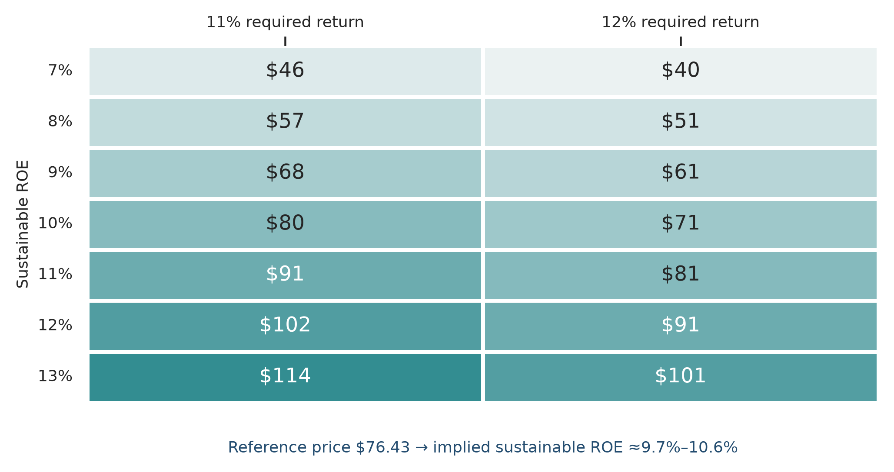
Author model using the supplied sensitivity table, 3% long-term growth and approximately $91 book value per share; not a price target. At $76.43, implied ROE is 9.72% for an 11% required return and 10.56% for 12%. Thus the price falls between the 9%–10% cases in the first column and the 10%–11% cases in the second.
| Sustainable ROE | 11% Required Return | 12% Required Return |
|---|---|---|
| 7% | ~$46 | ~$40 |
| 8% | ~$57 | ~$51 |
| 9% | ~$68 | ~$61 |
| 10% | ~$80 | ~$71 |
| 11% | ~$91 | ~$81 |
| 12% | ~$102 | ~$91 |
| 13% | ~$114 | ~$101 |
At a market price near $76, the stock therefore requires approximately a 10% sustainable ROE to justify its valuation under an 11% to 12% required return. The current price does not require Lennar to return to its historical peak profitability, but it does require a meaningful improvement from current earnings.
This is why Lennar appears inexpensive without being clearly mispriced. If the company can sustain an ROE of 11% to 12%, the current price provides meaningful upside. If normalized ROE settles near 9% to 10%, the stock is closer to fair value. If the new operating model produces only 7% to 8% ROE, trading near tangible book value would not provide an adequate return.
A larger margin of safety appears below approximately $65 per share. At that price, the investor would be paying roughly 0.7 times reported book value and materially below tangible book value. The required operating outcome becomes less demanding, with normalized ROE in the high single digits capable of supporting an acceptable return. Near $60, the valuation would require even less improvement in Lennar’s economics.
These price levels should not be interpreted as fixed intrinsic values. Book value, tangible book value, interest rates, and Lennar’s normalized earning power will change over time. A lower share price would also not improve the investment case if it were accompanied by evidence that margins are structurally lower, deposits continue absorbing capital, or asset turnover begins to decline.
The valuation therefore depends on the same operating question that runs through the rest of the analysis. At approximately $76, Lennar is not priced for a return to peak profitability, but neither is it priced for permanent weakness. The current valuation becomes attractive if the asset-light model can produce sustainable low-double-digit returns on equity. A price closer to $60 to $65 would provide greater protection if normalized returns prove weaker than expected.
What to Watch
The investment thesis can be monitored through a relatively small number of operating and balance-sheet metrics. The most important are gross margin, SG&A, asset turnover, land deposits, operating cash flow, and option losses.
Home-sale gross margin is the clearest measure of whether Lennar is recovering enough pricing power to make the new model economically attractive. Third-quarter 2026 gross margin was 15.8%, and fourth-quarter guidance is 15.5% to 16.0%. A sustained recovery toward 18% to 19% would materially improve normalized returns without requiring a return to peak-cycle pricing. If margins remain near 15% to 17% after affordability conditions improve, the lower margin would be more likely to reflect the structure of the business rather than only the housing cycle.[2]
SG&A should be evaluated alongside gross margin. Third-quarter 2026 SG&A represented 9.2% of home-sale revenue. If revenue stabilizes while SG&A returns closer to 8%, Lennar would recover operating margin even without a large increase in gross margin. If SG&A remains elevated while gross margin stays weak, operating leverage will continue working against the company.[2]
Asset turnover is the main measure of whether Lennar is receiving the benefit it expects from the new operating model. Management has reported a substantial increase in inventory turns as owned land and construction cycle times have declined. If turns remain above roughly 2 times while margins recover, Lennar would have evidence that the new structure can generate higher returns with less capital employed. If turns decline as production slows, the lower margin accepted under the new model would become harder to justify.[4, 2]
Land deposits are the clearest balance-sheet test of the asset-light strategy. Real-estate deposits and pre-acquisition costs increased from approximately $3.5 billion at the end of 2024 to $6.3 billion at the end of 2025 and approximately $7.3 billion by August 2026. This balance does not need to decline, but its growth should eventually moderate relative to homebuilding activity. Continued rapid growth would indicate that part of the capital removed from owned land is being replaced by a larger deposit requirement.[1, 2]
Operating cash flow should improve as that deposit build stabilizes. Lennar generated only $217 million of operating cash flow in 2025 despite more than $2 billion of net income because working capital absorbed substantial cash. The asset-light model will be more convincing once operating cash flow begins to track earnings more closely over a full cycle. Persistent weak cash conversion after deposit growth stabilizes would be a significant negative signal.[1]
Option write-offs and land impairments should remain limited. One advantage of the new model is that Lennar can often abandon unattractive land positions by forfeiting deposits rather than purchasing the underlying land. Small write-offs are therefore a normal cost of maintaining flexibility. A material increase in option abandonment, deposit losses, or inventory impairments would indicate that the controlled-land pipeline was built under assumptions that no longer support acceptable returns.
The next 10-Q should also provide updated detail on land-bank obligations and VIE exposure. At May 2026, approximately $958 million of optioned land was associated with transactions Lennar was economically compelled to complete, including approximately $255 million of purchase obligations due at contract maturity. These figures are manageable relative to Lennar’s equity base, but a significant increase would reduce the flexibility implied by the 98% controlled-land figure.[3]
D.R. Horton remains the most useful external benchmark. If Lennar’s margins recover while D.R. Horton’s remain near current levels, the gap between the two companies should narrow. If D.R. Horton continues earning gross margins near 20% and low- to mid-teens ROE while Lennar remains materially below both measures, it would become increasingly difficult to attribute Lennar’s weaker returns primarily to macroeconomic conditions.[10, 11]
The thesis therefore strengthens if gross margin moves toward 18% to 19%, SG&A declines toward 8%, asset turnover remains high, deposit growth moderates, operating cash flow converges toward earnings, and option losses remain limited. It weakens if margins remain near current levels, deposits continue expanding rapidly, cash conversion remains poor, or asset turnover declines as production slows.
These metrics matter more than short-term movements in the stock price. The central question is whether Lennar can convert its lower-capital operating model into sustainable low-double-digit returns on equity without rebuilding the land exposure it has spent the last several years reducing.
Management and Capital Allocation
Lennar’s capital allocation has generally been conservative, but not uniformly disciplined. The company has reduced debt, repurchased a substantial amount of stock, simplified the business, and restructured its land strategy. At the same time, some recent share repurchases were made at materially higher prices than the current market price.
Since 2018, Lennar has repurchased approximately $9.6 billion of stock and retired approximately $6.9 billion of senior notes. This reduced both the share count and financial leverage. In 2024 alone, Lennar spent approximately $2.3 billion on share repurchases, followed by approximately $1.8 billion in 2025.[4, 18]
The reduction in shares outstanding has been meaningful. Lennar repurchased approximately 10.0 million shares in 2023, 13.6 million in 2024, and 14.1 million in 2025 through its repurchase program. In November 2025, Lennar also exchanged its remaining Millrose stake for approximately 8.0 million Lennar shares, reducing the share count without using additional cash.[1]
The economic benefit of these repurchases depends on the price paid relative to intrinsic value. Lennar’s average repurchase price was approximately $41.63 in 2018, $50.41 in 2019, $66.42 in 2020, $97.56 in 2021, approximately $159.60 in 2024, and approximately $123.02 in 2025. The earlier repurchases appear more attractive in hindsight than the more recent ones. This suggests that Lennar has used buybacks primarily as a regular method of returning excess capital rather than only when the stock was clearly undervalued.[18]
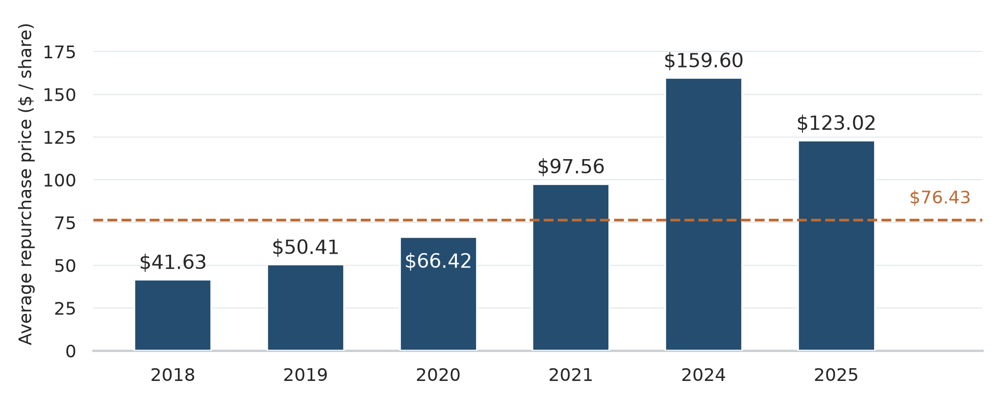
Sources: [16, 18]. Selected years; 2022–2023 are not plotted. 2024–2025 repurchase prices are approximate. Dashed line: Sept. 18, 2026 closing price of $76.43. Historical purchase prices show buyback timing, not intrinsic value.
Debt reduction has been more consistently positive. Lennar entered the current downturn with relatively low leverage, which gives the company flexibility to continue operating through weak housing conditions without relying on distressed refinancing or equity issuance. This is particularly important for a cyclical business whose earnings can decline rapidly when pricing weakens.
The Millrose transaction is the largest recent capital-allocation decision. Rather than continuing to hold billions of dollars of land on Lennar’s balance sheet, management transferred a substantial portion of that capital requirement to an external land provider. The decision reduces direct land exposure and should improve capital efficiency if the associated decline in margin is smaller than the improvement in asset turnover and cash conversion.[1]
Lennar has also simplified its business by reducing exposure to non-core activities and concentrating capital around homebuilding, financial services, and the land-light operating model. The company has continued to make selective acquisitions, including the acquisition of Rausch Coleman’s homebuilding operations in 2025 for approximately $254 million of net cash. The structure of that transaction was consistent with Lennar’s broader strategy because Millrose acquired much of the associated land while Lennar acquired the homebuilding operation.[1]
Management’s long tenure is relevant because the current strategy represents a significant change in how Lennar allocates capital rather than a temporary adjustment to current market conditions. Stuart Miller has substantial economic exposure to Lennar shares and significant voting control through the company’s dual-class structure. This aligns his financial interests with long-term shareholders, but also gives management substantial discretion over strategic decisions.[20, 1]
The main capital-allocation question is therefore not whether Lennar has been aggressive or conservative in isolation. It is whether management is reallocating capital from lower-return uses, particularly owned land, toward uses that increase per-share value. Debt reduction and long-term share-count reduction have been positive. The remaining uncertainty is whether the capital released by the land-light model will ultimately produce higher cash returns or simply be offset by lower margins, larger deposits, and continued buybacks at average rather than clearly attractive prices.
Conclusion
Lennar is a financially strong homebuilder undergoing a meaningful change in how it uses capital. Since fiscal 2020, the company has reduced direct land ownership from 61% of homesites to 2%, increased the use of land banks and options, shortened construction cycles, lowered construction costs, and increased asset turnover. The objective is to earn higher returns on equity with less capital committed to land.[17, 1, 4]
The operating improvements are real. The financial outcome is not yet proven. Lennar’s home-sale gross margin declined from 22.3% in 2024 to 17.7% in 2025 and 15.8% in the third quarter of 2026. Net income has declined much faster than deliveries, operating cash flow has remained weak relative to earnings, and real-estate deposits have increased substantially as the controlled-land pipeline expanded.[1, 2, 4]
Part of this deterioration is clearly cyclical. Mortgage rates near 7%, 9.6 months of new-home supply, and elevated incentives have reduced pricing power across the industry. Lennar has also continued lowering construction costs, which indicates that the current margin pressure is not primarily the result of worsening construction efficiency.[6, 9, 2]
The comparison with D.R. Horton prevents the housing cycle from explaining the entire difference. D.R. Horton has also shifted toward a predominantly controlled-land model while maintaining gross margins near 20% and returns on equity in the low- to mid-teens. Lennar’s move to 98% controlled homesites is more extreme, and it remains unclear whether the additional reduction in capital employed is sufficient to justify the lower margin associated with its current structure.[10, 11]
The most important risk is therefore not insolvency. Lennar has moderate leverage, substantial equity, and significantly less direct land exposure than it carried before the financial crisis. The more likely failure case is that the company remains profitable and financially stable while generating only high-single-digit returns on equity. In that outcome, Lennar would have successfully reduced balance-sheet risk without creating a business that earns an adequate return on shareholder capital.
A reasonable normalized case assumes gross margin of approximately 18% to 19%, SG&A near 8% of home-sale revenue, continued high asset turnover, and improved cash conversion as deposit growth stabilizes. Under those assumptions, Lennar can generate approximately 10% to 11% normalized ROE without returning to peak-cycle housing conditions.
At approximately $76 per share, Lennar trades near tangible book value and below reported book value. That valuation does not require a return to pandemic-era profitability, but it does require Lennar to recover from current mid-single-digit returns to approximately low-double-digit normalized ROE. If the company can sustain 11% to 12% returns while maintaining its lower land exposure, the current valuation is attractive. If normalized ROE settles near 9% to 10%, the stock is closer to fair value. If returns remain near 7% to 8%, the current price does not provide an adequate return.[16, 2]
The margin of safety becomes more attractive around $60 to $65 per share, assuming the underlying operating thesis remains unchanged. At those prices, the investment requires less margin recovery and provides greater protection against the possibility that Lennar’s new model earns structurally lower returns than expected.
The thesis should therefore be judged through the operating results rather than movements in the stock price. Gross margin should recover toward 18% to 19%, SG&A should normalize, asset turnover should remain high, deposit growth should moderate, and operating cash flow should begin to track earnings more closely. If those conditions develop, Lennar will have demonstrated that its lower-capital model can produce attractive returns. If they do not, the current transformation may have made Lennar safer without making it more economically productive.
Sources
[1] Lennar Corporation, Form 10-K for fiscal year ended Nov. 30, 2025, SEC. https://www.sec.gov/Archives/edgar/data/920760/000162828026003870/len-20251130.htm
[2] Lennar Corporation, Q3 2026 earnings release, filed as Exhibit 99.1 to Form 8-K, Sept. 16, 2026, SEC. https://www.sec.gov/Archives/edgar/data/920760/000162828026062287/ex991-2026831x8kq3.htm
[3] Lennar Corporation, Form 10-Q for quarter ended May 31, 2026, SEC. https://www.sec.gov/Archives/edgar/data/920760/000162828026046019/len-20260531.htm
[4] Lennar Corporation, Investor Presentation, June 2026, filed as Exhibit 99.1, SEC. https://www.sec.gov/Archives/edgar/data/920760/000119312526268580/d31288dex991.htm
[5] Lennar Corporation, Form 10-K for fiscal year ended Nov. 30, 2008, SEC. https://www.sec.gov/Archives/edgar/data/920760/000119312509011559/d10k.htm
[6] Freddie Mac, Primary Mortgage Market Survey, week of Sept. 17, 2026. https://www.freddiemac.com/pmms
[7] Board of Governors of the Federal Reserve System, Monetary Policy Report, July 2026, housing and mortgage rate-lock discussion. https://www.federalreserve.gov/monetarypolicy/2026-07-mpr-part1.htm
[8] National Association of Realtors, Tackling Home Financing and Down Payment Misconceptions, June 30, 2025. https://www.nar.realtor/news/economists-outlook/tackling-home-financing-and-down-payment-misconceptions
[9] U.S. Census Bureau and HUD, Monthly New Residential Sales, July 2026, released Aug. 25, 2026. https://www.census.gov/construction/nrs/current/
[10] D.R. Horton, Inc., Form 10-K for fiscal year ended Sept. 30, 2025, SEC. https://www.sec.gov/Archives/edgar/data/882184/000088218425000081/dhi-20250930.htm
[11] D.R. Horton, Inc., Form 10-Q for quarter ended June 30, 2026, SEC. https://www.sec.gov/Archives/edgar/data/882184/000088218426000096/dhi-20260630.htm
[12] D.R. Horton, Inc., Form 10-K for fiscal year ended Sept. 30, 2021, SEC. https://www.sec.gov/Archives/edgar/data/882184/000088218421000190/dhi-20210930.htm
[13] D.R. Horton, Inc., Form 10-K for fiscal year ended Sept. 30, 2015, SEC. https://www.sec.gov/Archives/edgar/data/882184/000088218415000085/a2015930-10k.htm
[14] Forestar Group / D.R. Horton acquisition filings, 2017; D.R. Horton acquired 75% of Forestar for approximately $558.3 million. https://www.sec.gov/Archives/edgar/data/1406587/000140658717000045/for-0930201710q.htm
[15] U.S. Department of the Treasury, Daily Treasury Par Yield Curve Rates, Sept. 18, 2026. https://home.treasury.gov/resource-center/data-chart-center/interest-rates/TextView?field_tdr_date_value=2026&type=daily_treasury_yield_curve
[16] StockAnalysis, Lennar (LEN) historical price data, Sept. 18, 2026 close. https://stockanalysis.com/stocks/len/history/
[17] Lennar Corporation, Form 10-K for fiscal year ended Nov. 30, 2020, SEC. https://www.sec.gov/Archives/edgar/data/920760/000162828021000722/len-20201130.htm
[18] Lennar Corporation, SEC EDGAR filings, Forms 10-K and annual repurchase disclosures for fiscal 2018-2025. https://www.sec.gov/edgar/browse/?CIK=920760&owner=exclude
[19] D.R. Horton, Inc., Form 10-Q for quarter ended Dec. 31, 2016, SEC (Sept. 30, 2016 land/lot mix). https://www.sec.gov/Archives/edgar/data/882184/000088218417000020/a1231201610q.htm
[20] Lennar Corporation, 2026 Proxy Statement, SEC. https://www.sec.gov/Archives/edgar/data/920760/000119312526073504/d940888ddef14a.htm
This is personal analysis, not investment advice. I am not a financial advisor.
← All posts
Comments
Loading comments…
Add a comment
Sign in with GitHub to post. For a named link, use
[link text](https://example.com). Close the editor to refresh the discussion.You can also find this discussion on GitHub.